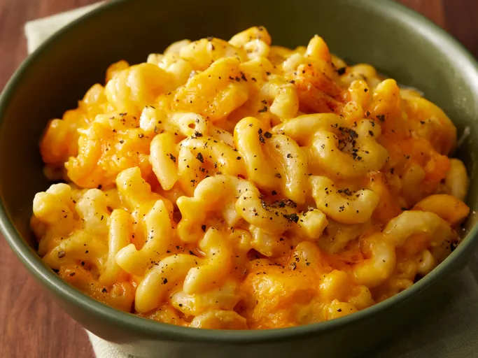

Mac And Cheese

Description
This crockpot mac and cheese is creamy, comforting, and takes just moments to assemble in a slow cooker. Great for large family gatherings and to take to potluck dinners. It's always a big hit!
Ingredients
- Macaroni
- Butter
- Seasonings
- Cheese
- Milk products
- Eggs
- Canned Soup
- Ground paprika
How to make it
- Boil the pasta in salted water, then drain and transfer to the slow cooker.
- Stir in the butter, seasonings, and about half of the Cheddar.
- Whisk the evaporated milk and eggs together, then stir into the pasta.
- Whisk the milk and the soup together, then stir into the pasta.
- Sprinkle the remaining cheese over the pasta mixture and garnish with paprika.
- Cook on Low for 2 ½ to 3 hours.
Document